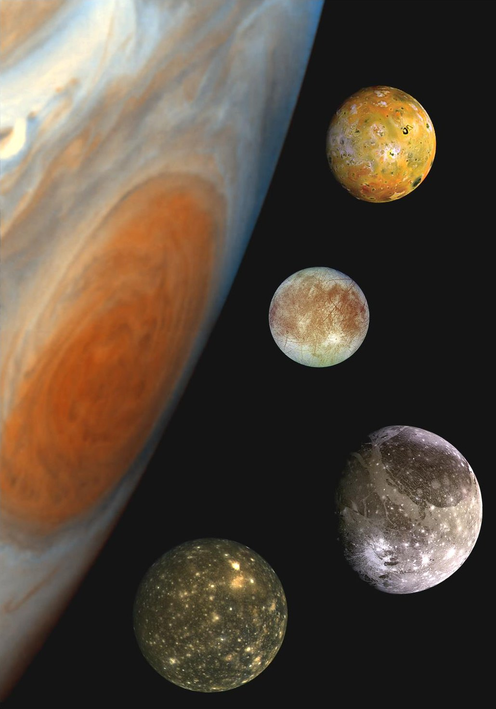
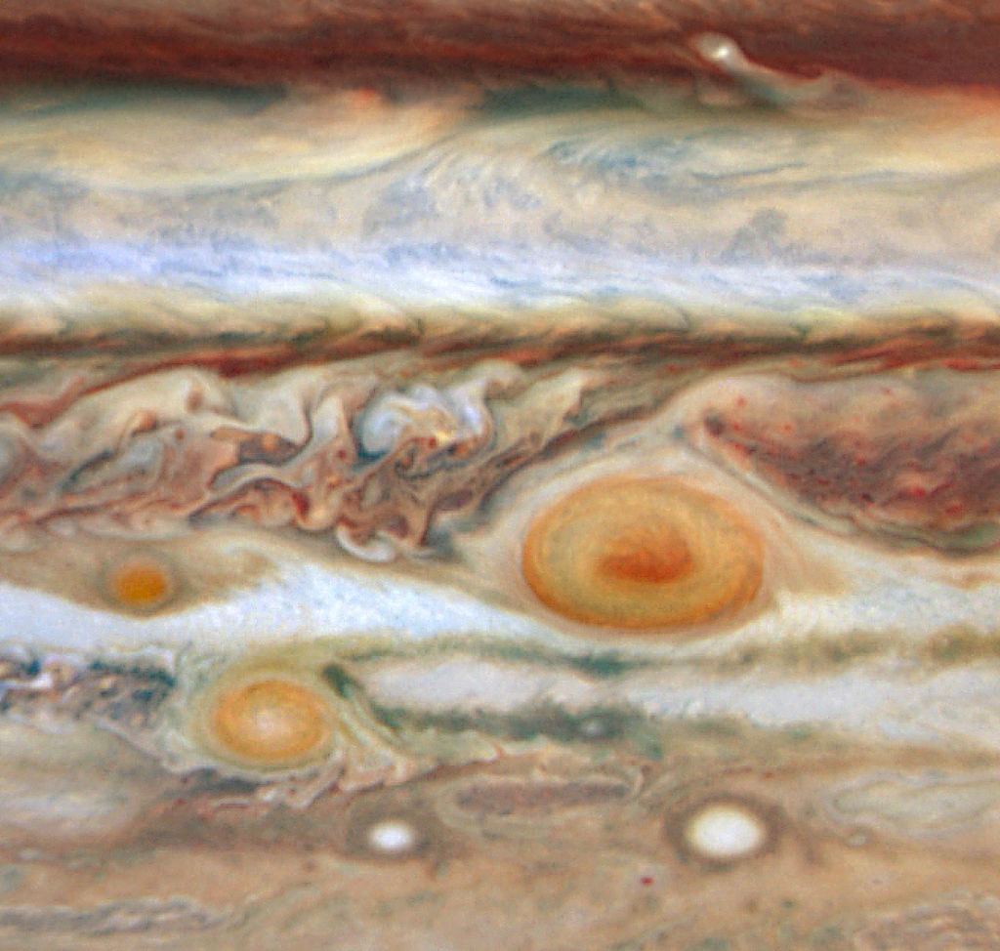

Jupiter
Jupiter is the largest planet in the Solar System and the fifth farthest from the Sun. Along with Saturn, Jupiter is classified as a gas giant. The planet has been known to humanity since ancient times, reflected in the mythology and religious beliefs of various cultures: Mesopotamian, Babylonian, Greek, and others. The modern name Jupiter comes from the name of the ancient Roman supreme god of thunder. Jupiter's atmosphere features phenomena such as storms, lightning, and polar auroras, which are orders of magnitude larger than those on Earth. One notable feature in its atmosphere is the Great Red Spot - a giant storm known since the 17th century.

As of May 2023, Jupiter has 95 known moons - 51 fewer than Saturn. Estimates suggest there may be at least a hundred moons. The moons are mainly named after various mythological characters associated with Zeus-Jupiter in one way or another. The moons are divided into two major groups - inner (8 moons, Galilean and non-Galilean inner moons) and outer (84 moons, also divided into two groups) - thus, there are 4 "types" in total. The four largest moons - Io, Europa, Ganymede, and Callisto - were discovered as early as 1610 by Galileo Galilei.
During major oppositions, Jupiter is visible to the naked eye as one of the brightest objects in the night sky after the Moon and Venus. Jupiter's disk and moons are popular observation targets for amateur astronomers, who have made several discoveries (such as the Shoemaker–Levy 9 comet collision with Jupiter in 1994 or the disappearance of Jupiter's South Equatorial Belt in 2010).
Astronomical Characteristics
Jupiter is the largest planet in the Solar System, a gas giant. Its equatorial radius is 71.4 thousand km, which is 11.2 times greater than Earth's radius. Jupiter is the only planet whose center of mass with the Sun lies beyond the Sun and is about 7% of the solar radius away from it.

Jupiter's mass exceeds the combined mass of all the other planets in the Solar System by 2.47 times, Earth's mass by 317.8 times, and is approximately 1000 times less than the Sun's mass. Its density (1326 kg/m³) is approximately equal to the density of the Sun and is 4.16 times less than Earth's density (5515 kg/m³). The surface gravity, typically taken at the top layer of clouds, is more than 2.4 times that of Earth: a body with a mass of, for example, 100 kg would weigh as much as a body with a mass of 240 kg on Earth's surface. This corresponds to a free-fall acceleration of 24.79 m/s on Jupiter compared to 9.81 m/s for Earth.
Exploration of Jupiter
The exploration of Jupiter has largely been carried out with the involvement of NASA's U.S. spacecraft. From the early 1970s to the present day, American missions have provided significant data on the giant gas planet and its moons. One of the earliest significant successes were the Pioneer 10 and Pioneer 11 missions in 1973 and 1974, respectively, which flew past Jupiter, obtaining the first high-resolution images and basic parameters of its magnetic field.

Then in 1979, the Voyagers made a more detailed study, approaching the planet at a distance of about 130,000 kilometers and transmitting a large amount of data, including photographs and information about Jupiter's magnetosphere. NASA's longest mission, Galileo, was launched in 1995, conducting research in Jupiter's system until 2003, obtaining valuable information about its atmosphere and moons.
Modern investigations, such as the Juno mission, continue to expand our understanding of Jupiter and its surroundings. Future projects, such as the Europa Jupiter System Mission, are also actively being considered, aimed at studying the Galilean moons of the planet, including investigating potentially habitable oceans beneath icy crusts.

Great Red Spot
The Great Red Spot is an oval-shaped feature of varying size located in the southern tropical zone. It was discovered by Robert Hooke in 1664. Currently, it has dimensions of 15x30 thousand km (Earth's diameter ~12.7 thousand km), and observers noted sizes twice as large 100 years ago. Sometimes it is not very clearly visible. The Great Red Spot is a unique long-lived giant hurricane, with material swirling counterclockwise and completing a full rotation in 6 Earth days.
Thanks to investigations conducted at the end of 2000 by the Cassini probe, it was found that the Great Red Spot is associated with descending flows (vertical circulation of atmospheric masses); clouds here are higher and temperatures are lower than in the rest of the areas. Cloud colors depend on altitude: blue structures are upper, below them lie brown ones, then white. Red structures are the lowest. The rotation speed of the Great Red Spot is 360 km/h. Its average temperature is -163°C